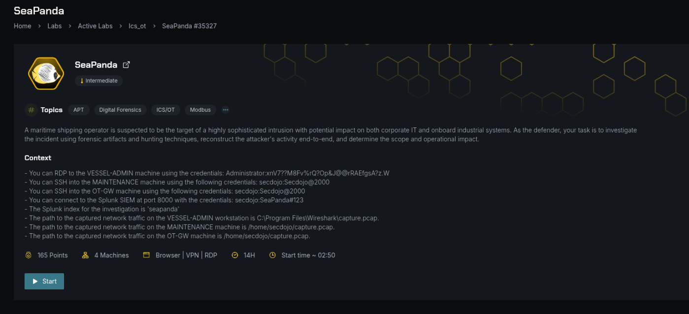
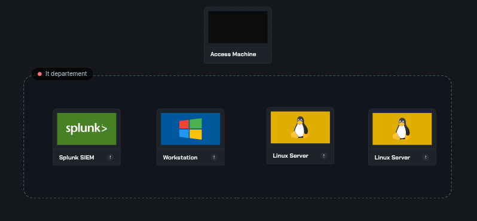
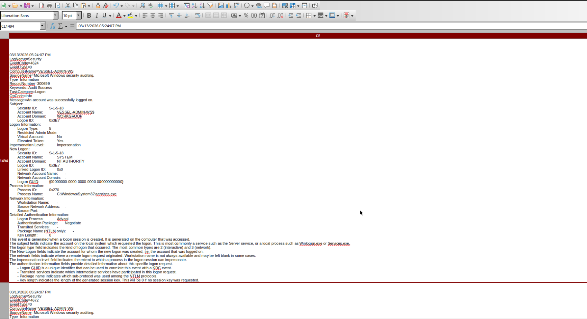
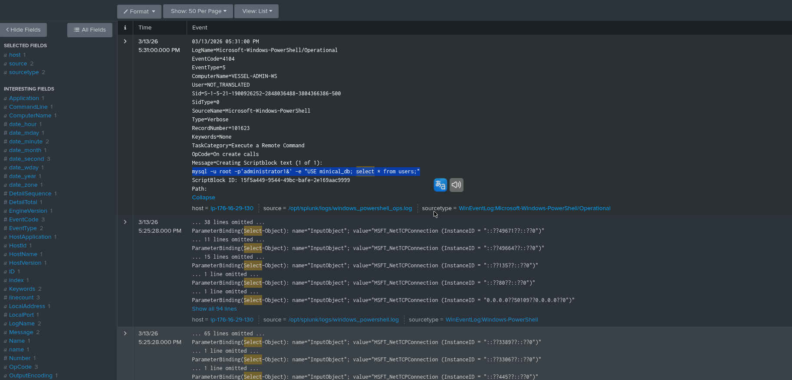
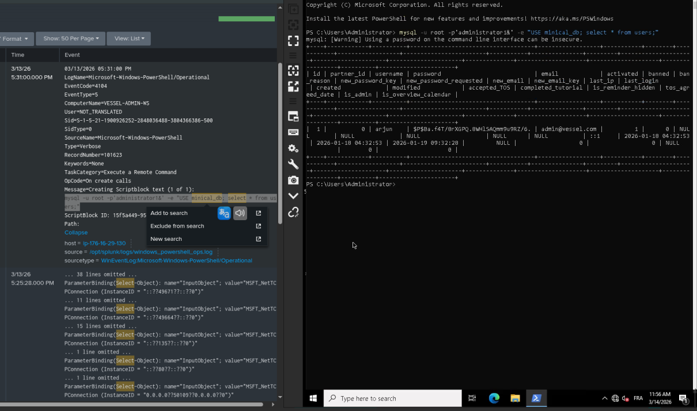
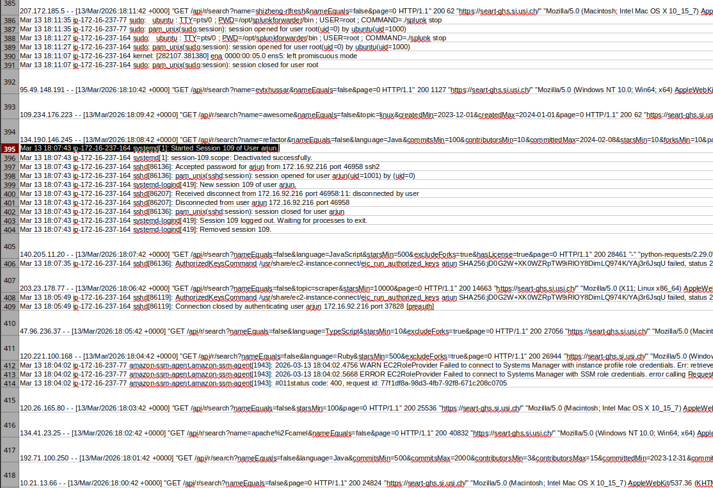
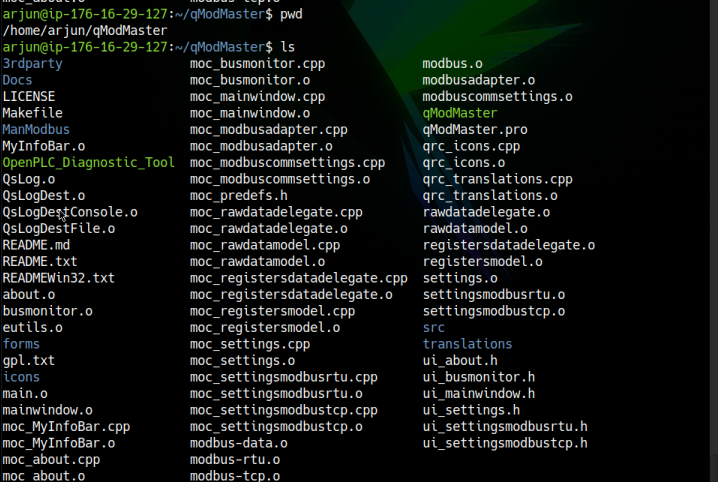
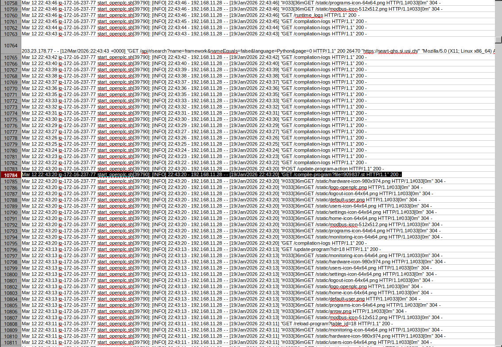

Maritime ICS Attack
Reconstructing an Operational Technology Cyber Attack: From USB Infection to PLC Manipulation — A simulated cyber-physical attack targeting a maritime shipping operator's industrial control systems, analyzed during the DSGN competition at Secodojo Labs.
Attack Overview
This attack reconstruction was played in Secodojo Labs during the DSGN competition.

In this investigation, I analyzed a simulated cyber-physical attack targeting a maritime shipping operator. The attacker successfully compromised access into the vessel's ICS (Industrial Control System) environment controlling OpenPLC.
The attacker demonstrated a high level of sophistication, carefully chaining multiple techniques to pivot from the IT environment into critical OT infrastructure.
Investigation Environment

In a real-world industrial environment, different machines have different roles, which is why the lab has multiple machines instead of one. To reconstruct the attack chain, the lab provided multiple systems representing both corporate IT and OT networks:
| Machine | OS | Role |
|---|---|---|
| VESSEL-ADMIN Workstation | Windows | Administrative workstation used to manage vessel systems |
| MAINTENANCE Server | Linux | Maintenance server for managing operational systems |
| OT-GW (Operational Technology Gateway) | Linux | Gateway between corporate IT network and industrial control systems |
| Splunk SIEM Platform | Platform | Centralized log analysis and monitoring |
Phase 1: Initial Compromise (Weaponization & Delivery)
The attack began with the introduction of a malicious USB device connected to
the administrative workstation VESSEL-ADMIN-WS. This allowed the attacker to deliver
the initial payload.
A binary named USBInstaller.exe was executed directly from the removable drive.
The installer dropped a malicious binary vessel_update.exe. The malware injected
its code into a legitimate process to evade detection.

03/13/2026 05:07:02 PM
LogName=Microsoft-Windows-Sysmon/Operational
EventCode=11
EventType=4
ComputerName=VESSEL-ADMIN-WS
User=VESSEL-ADMIN-WS\Administrator
Sid=S-1-5-21-1900926252-2848036488-3804366386-500
SourceName=Microsoft-Windows-Sysmon
Type=Information
RecordNumber=22011
TaskCategory=FileCreate
Message=File created:
RuleName: -
UtcTime: 2026-01-20 17:07:02.401
ProcessGuid: {6b7f4a2c-3d3a-65ad-0000-00102a3f0000}
ProcessId: 4128
Image: E:\USBInstaller.exe
TargetFilename: C:\Users\Administrator\AppData\Local\Temp\vessel_update.exe
CreationUtcTime: 2026-01-20 17:07:02.401
User: VESSEL-ADMIN-WS\Administrator
Hashes: SHA256=7F0C2A3B5E0E7D2E2A7B7A0E0D7DAB3A7B8E5D4C2B1A0F9E8D7C6B5A4E3D2C1B
AdditionalInfo: SourceDrive=E:\ (DriveType=Removable; Device=USBSTOR)File executed:
E:\USBInstaller.exeDropped malicious binary:
C:\Users\Administrator\AppData\Local\Temp\vessel_update.exeMalware Technique: DLL Sideloading (injected DLL into legitimate process to hide activity)
Anti-Forensics: Self-deletion routine after injection
Malware Functionality (Fake Update)
- Claimed to be a software update
- In reality: stealth execution, credential theft, persistence, and preparation for OT attack
Phase 2: Credential Harvesting & Database Access
After establishing a foothold, the attacker began searching for credentials stored locally on the system. During this phase, the attacker accessed a database associated with the web application running on the system.


arjun/SeaPanda123
- Malware scanned local files for credentials
- Extracted Linux administrative credentials:
arjun:SeaPanda123! - Splunk logs revealed unusual file access followed by outbound connections to C2
With the stolen credentials, the attacker authenticated to other systems within the internal network. This phase demonstrates Credential Reuse for Lateral Movement.
Phase 3: SSH Lateral Movement
Using the credentials of user arjun, the attacker initiated an SSH session from the
Windows workstation to a Linux-based OT gateway.

$ ssh arjun@172.16.237.77
arjun@172.16.237.77's password: ********
Last login: Wed Mar 13 09:30:22 2026 from 172.16.237.10
arjun@ot-gw:~$ whoami
arjun
arjun@ot-gw:~$ sudo -l
Matching Defaults entries for arjun on ot-gw:
env_reset, mail_badpass, secure_path=/usr/local/sbin\:/usr/local/bin\:/usr/sbin\:/usr/bin\:/sbin\:/bin\:/snap/bin
User arjun may run the following commands on ot-gw:
(ALL : ALL) ALLUsed stolen credentials to SSH from Windows to Linux OT management server (
172.16.237.77)Modified
/etc/ssh/sshd_config for persistence
Phase 4: PLC Targeting and OT Reconnaissance
Once inside the OT Gateway, the attacker performed reconnaissance to identify industrial services running on the system.
Reconnaissance Commands
- System identification:
whoami & uname -a - Check open OT ports:
ss -tanup(to find Modbus Port 502 and Web Port 8080) - TCP scan (living off the land):
for p in {1..65535}; do echo >/dev/tcp/...
The attacker uploaded a malicious diagnostic tool into a legitimate directory:
OpenPLC_Diagnostic_Tool


Mar 12 22:43:20 ip-172-16-237-77 start_openplc.sh[39790]: [INFO] 22:43:20 - 192.168.11.28 - - [19/Jan/2026 22:43:20]"GET /compile-program?file=909837.st HTTP/1.1" 200 -Tool deployed:
OpenPLC_Diagnostic_Tool in the qModMaster directoryProtocol: Modbus TCP on port 502
Malicious Payload:
909837.st uploaded via OpenPLC Web Interface
(/compile-program?file=909837.st)Vulnerability: The PLC allowed Unauthorized Write Access to registers
Phase 5: OT Manipulation
At this stage of the attack chain, the threat actor had successfully pivoted into the OT environment and gained the ability to manipulate the PLC controlling the vessel's critical operations.
This level of access allowed the attacker to potentially influence the vessel's ballast control system, which directly affects the ship's stability.
Modbus TCP Exploitation Details
| Component | Details |
|---|---|
| Target System | OpenPLC Runtime (Vessel Control) |
| Attack Vector | Web Interface Upload (/compile-program) |
| Malicious File | 909837.st (PLC logic) |
| Protocol | Modbus TCP (Port 502) |
| Impact | Manipulation of ballast control logic |
Attack Timeline
| Time | Event |
|---|---|
| 2026-03-13 08:00 | USB drive inserted; E:\USBInstaller.exe executed on VESSEL-ADMIN-WS |
| 2026-03-13 08:30 | Malicious vessel_update.exe runs (process hollowing, MD5=6103328e...) |
| 2026-03-13 09:00 | Scheduled task "VesselMaintenance" created; payload contacts C2 (Sliver) |
| 2026-03-13 09:15 | Attacker runs PowerShell port scan (TCPClient loop) |
| 2026-03-13 09:30 | MySQL credentials dumped (arjun:SeaPanda123! found) |
| 2026-03-13 09:45 | SSH login to 172.16.237.77 using arjun (SSH lateral movement) |
| 2026-03-13 10:00 | On Linux: attacker runs OpenPLC_Diagnostic_Tool (MD5=6103... Go binary) |
| 2026-03-13 10:10 | 1..254 | Test-Connection ping sweep on 172.16.237.x |
| 2026-03-13 10:30 | Attacker uploads 909837.st via OpenPLC web interface |
| 2026-03-13 10:35 | Modbus/TCP writes to PLC on port 502 (ballast control logic overwritten) |
Attack Chain & MITRE ATT&CK Mapping
Attack Chain Visualization
Attack Chain Steps
- USB Device — Physical insertion of malicious USB drive
- Windows Workstation (VESSEL-ADMIN-WS) — Initial compromise
- Malware Execution (vessel_update.exe) — Process hollowing and persistence
- Credential Extraction — Database access and credential theft
- Use of Stolen Credentials —
arjun:SeaPanda123 - SSH Lateral Movement — Pivot to OT Gateway
- Compromise of OT Gateway — Access to industrial control environment
- Modbus Exploitation — Manipulation of PLC registers
- Malicious PLC Logic Deployment —
909837.stuploaded
MITRE ATT&CK Mapping
The attacker techniques observed during the investigation map to several MITRE ATT&CK tactics:
| Tactic | Technique | ID |
|---|---|---|
| Initial Access | Removable Media | T1091 |
| Execution | Command and Scripting Interpreter | T1059 |
| Defense Evasion | Process Injection (Process Hollowing) | T1055.012 |
| Persistence | Scheduled Task | T1053 |
| Credential Access | Credentials from Files | T1552 |
| Discovery | Network Service Scanning | T1046 |
| Lateral Movement | SSH | T1021.004 |
| Command & Control | Sliver C2 | T1071 |
| Impact | Manipulation of Control Logic | ICS Technique |
All activities in this writeup were conducted within a fully authorized, isolated laboratory environment.
These techniques are presented solely for educational and defensive security purposes.
Key Takeaways
- IT/OT Convergence creates attack vectors that bridge corporate and industrial networks
- Physical USB devices remain a viable initial access vector in isolated environments
- Credential reuse across IT and OT systems enables lateral movement
- Modbus TCP lacks authentication, making it vulnerable to manipulation
- OpenPLC web interfaces can be exploited to deploy malicious logic